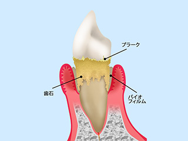
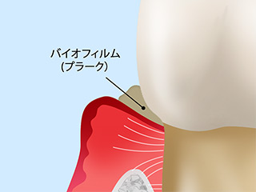
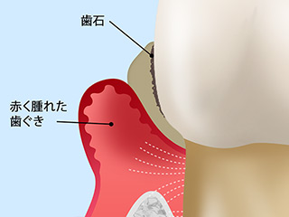
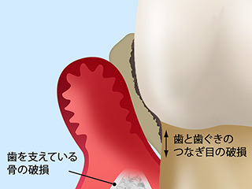
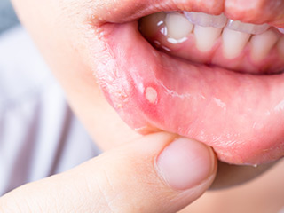
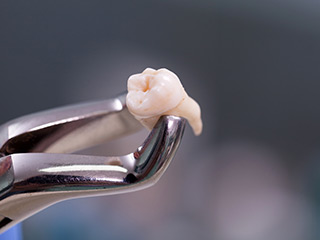

- ホーム
- 一般歯科｜歯周病治療・口内炎・口腔外科・顎関節症
Periodontaお口まわりのお悩みは何でもご相談ください
渋谷駅すぐの歯医者「渋谷ルーブル歯科・矯正歯科」では、矯正治療を中心に、一般歯科をはじめ歯科全般に対応します。歯ぐきの病気の歯周病、痛い口内炎、お口まわりの外科処置をおこなう口腔外科、顎の関節のお悩みなど何でもお気軽にご相談ください。
歯を失うことにつながる病気です～歯周病～
歯周病は高齢者がかかる病気のイメージがあるかもしれません。しかし日本の成人の約8割がすでに歯周病の予備群か、すでに発症しているといわれています。ごく初期段階では自覚症状があらわれないため、静かに進行してしまうのが、その原因の一つです。
歯周病とは

歯周病菌の作用で、歯を支える歯ぐきや顎の骨が破壊されていく病気です。「歯ぐきの腫れ」や「歯ぐきからの出血」「強い口臭」などに気づいたときにはすでに進行しています。治療せずに放っておくと顎の骨が溶けていき、支えを失った歯が抜け落ちてしまうことにもつながるのです。
歯周病セルフチェック
一つでも当てはまる方は歯周病のリスクがあります。お早めに当院にご相談ください。
- 歯ぐきが腫れている
- ブラッシングの際に歯ぐきから出血する
- 朝起きたときに口の中がネバつく
- 口臭がきつくなってきた
- 歯が浮く感じがする
- 歯がグラグラする
- 歯がしみる
- 歯ぐきから膿が出る
- 歯ぐきが下がって歯が長くなったように見える
歯周病の進行段階とおもな治療法
※表は左右にスクロールして確認することができます。
| 進行段階 | 症状 | おもな処置・治療 |
|---|---|---|
|
歯肉炎・軽度歯周炎  |
歯ぐきが軽い炎症を起こした状態です。ブラッシングの際に出血することがあります。 |
【ブラッシング指導】 【スケーリング】 |
|
中等度歯周炎  |
歯を支える顎の骨が溶けはじめた状態です。歯が浮くような感覚があります。口臭も強くなっていきます。 |
【ルートプレーニング】 【歯周ポケットそうは術】 |
|
重度歯周炎  |
顎の骨のほとんどが溶けてしまい、歯が大きくグラつきます。歯ぐきから膿や血が出て、口臭がかなりきつくなります。 |
【フラップ手術】 |
お口の中にできものはありませんか？～口内炎～
口内炎とは

お口の中の粘膜に起こる炎症を口内炎といいます。唇や舌、頬の内側や歯肉などに発症し、細菌性、ウイルス性、アフタ性、アレルギー性などさまざまな種類があります。
口内炎の原因
口内炎の原因はなかなかはっきりしませんが、お口の中だけでなく全身疾患や健康状態も影響することがあります。
- お口の中を傷つけたり、火傷したりすると口内炎を起こすことがあります
- ブラッシングができず、お口の中が不衛生だと、口内炎になりやすいので注意が必要です
- 全身の免疫力が低下すると口内炎を起こしやすくなります
口内炎の治療
口内炎のほとんどは1～2週間で自然に治ります。痛みが強く治療する場合には、患部にステロイド軟こうを塗ったり、保護シールを貼ったりします。長い期間腫れが引かない場合、強い痛みがある場合は、口腔外科治療を専門におこなう歯科医師の診察を受けましょう
お口まわりの外科処置をおこないます～口腔外科～

口腔外科という言葉は、あまり聞き慣れないかもしれません。口腔外科は、お口まわりの外科処置をおこなう診療科目です。たとえば親知らずの抜歯や歯ぐきの切開、口内炎の治療などで外科処置をともなうものがすべて含まれます。またインプラント治療などの高度な技術が必要な治療も含まれます。
口腔外科は歯科医師なら誰でもおこなえますが、病状によっては専門的な知識と技術が求められるため口腔外科を専門的におこなっている歯科医師も存在します。渋谷駅すぐの歯医者「渋谷ルーブル歯科・矯正歯科」では、口腔外科を専門にしている歯科医師が中心に治療しますので安心です。
顎の痛みはありませんか？～顎関節症～
顎関節症とは、顎のまわりの違和感が長期間続く症状の総称です。「口を開けると顎が痛い」「口が大きく開かない」「顎がカクカク、シャリシャリ鳴る」「顎がうまく動かない」「食事をするだけで顎が疲れる」などの自覚症状がある方は、一度ご相談ください。しばらくすると自然に治ることもありますが、放っておくと重症化することもあるので注意が必要です。
顎関節症とは
顎関節の中には「関節円板」という軟骨があり、この関節円板がスムーズに動かないと、そこにつながる筋肉や人体の動きが影響を受けてしまうのです。症状がさまざまあるように原因もさまざまで複数が絡み合っていることも少なくありません。
顎関節症の治療
お口の状態によってさまざまな治療法が考えられます。顎のまわりの筋肉の緊張をほぐすための、運動療法やマウスピースを活用するスプリント療法、歯並びや噛み合わせを整える矯正治療や補綴（ほてつ）治療、関節円板のずれを戻すためのピューレーション法などがあります。一つの治療法で改善することはまれです。ほとんどの場合、いくつかの治療を組み合わせます。
一般歯科